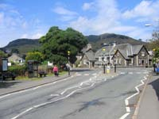
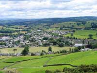
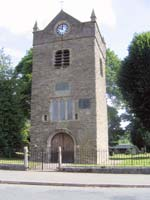
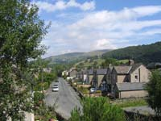
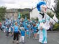
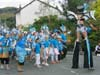
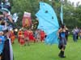

Staveley Tourist Information

{kind=link}

{kind=link}

There are further retail outlets and businesses operating from Mill Yard, all of whom provide a valuable service to the community and the tourist industry.
{kind=link}
A gentle stream, Gowan Beck, runs parallel to the main street, and a “tongue in cheek” story exists of a 19th Century vicar catching a Basking Shark in the shallow waters. The hook and “fly” said to have been used in this feat of angling decorates a wall in the bar of The Eagle & Child Pub.
There are excellent fishing venues in the area but shark sightings are unlikely.

{kind=link}
Staveley is surely a perfect starting point from where to explore the length and breadth of the Lake District and Cumbria. Close by is the village of Ings and its award winning pub / restaurant and the eating places of the Sun Inn and Wild Boar in the attractive hamlet of Crook for those with an appetite for traditional local fare.
Hotel, Guest House, Bed & Breakfast, Self Catering and Camping Barn accommodation is available in and around Staveley and Kentmere all of whom will ensure your stay is a comfortable happy experience.
The 2008 Staveley Carnival was a huge success this year.
Click on the pictures for larger ones.
{kind=link}
{kind=link}
{kind=link}
{kind=link}
  
{kind=link}
{kind=link}
{kind=link}
{kind=link}
The Carnival is held every 2 years.
How to get there:
By rail:
Staveley is on the Oxenholme to Windermere rail link.
From the North or South, take the London to Scotland West Coast main line and change at Oxenholme.
By road:
Find Staveley on the A591 between Kendal and Windermere.
Attractions in Staveley |
Staveley Mill Yard
It contains a variety of small businesses and services catering for both visitors and locals.
www.staveleymillyard.com
Mill Yard Studios
A working space for artists. Exhibitions and open days. Specialist courses and workshops.
www.millyardstudios.co.uk
Out of the Woods
Workshop & Showroom.
www.outofthewoodsinteriors.co.uk
The Daisy Chain Studio
A picture postcard gift shop offering a unique and exiting range of gift ideas for everyone.
www.daisychainstudio.co.uk
Annabel Williams Studio
Welcome to a new world of photography, a world where, whatever your skill as a photographer, you'll find a course that's exactly right for you.
www.annabelwilliams.com
Aiguille Alpine Equipment
Providing the best outdoor clothing and equipment in the NW of England.
Staveley Mill Yard.
www.aiguillealpine.co.uk
Staveley Natural Health Centre
We offer a wide range of alternative medicine and complementary therapies to the local community and visitors.
Whilst on holiday, you may like to treat yourself to a relaxing massage, reflexology or hot stone therapy session.
www.staveleynaturalhealth.co.uk
Wheelbase Lakeland Ltd
Bicycle superstore. Retailer of road and mountain bikes and accessories.
www.wheelbase.co.uk
Myrtle and Mace
Gardening products to compliment your garden lifestyle.
www.myrtleandmace.com
Inglefield Speciality Plants
Experience plants, shrubs and trees with Mediterranean and exotic influences.
www.inglefieldplants.co.uk
Relax and Smile
Holistic Swedish Massages. Well Being, Trigger Point and Remedial.
Staveley Mill Yard.
Food and Drink in Staveley |
The Duke William
Traditional Cumbrian Pub. Proprietors; David Edwards and Ruth Neeley.
63, Main Street, Staveley. E-mail dukewilliam1@btconnect.com Tel: 01539 822245.
Starly's Spice Company
Providing the finest spice and simple to follow recipes, that combined will enable you to create beautiful indian dishes.
The new Bistro is open, from 6pm till late.
www.starlys.co.uk
Hawkshead Brewery and Beer Hall
Hawkshead Brewery is a craft brewery, brewing traditional beer styles with a modern twist, in the heart of the English Lake District.
The beer hall is a fully licensed bar available for private functions. Set in comfortable surroundings overlooking the River Kent, it is able to seat 150 guests with food supplied via a connecting door from “Wilfs”or Lucys. Tours of the brewery are also available by prior arrangement. Opening hours are noon-6pm every day.
For details,
Phone: 01539 822644
Email: info@hawksheadbrewery.co.uk
www.hawksheadbrewery.co.uk
Friendly Food and Drink
Producing completely natural hand-made chutneys, preserves, coulis and sauces.
Taste the full range and watch us make them.
www.friendlyfoodanddrink.co.uk
Catering Partnerships
A Quality Food Service Equipment supplier in Cumbria.
We supply to all sectors of the catering trade.
www.cateringpartnership.co.uk
Lucy Cooks
A fabulous Cookery School that has a fresh and vibrant approach, where you will be inspired, educated and above all entertained!
www.lucycooks.co.uk
Scoop Ice Cream
Scoop is the mobile/retail side of Windermere Ice Cream and based at Mill yard.
www.scoopchocice.co.uk
The Fairground
The Fairground is a unique company delivering a complete range of delicious fairtrade coffee, fairtrade tea, fairtrade drinking chocolate and fairtrade sugar to quality hotels, guest houses, offices, restaurants, schools and colleges.
The Fairtrade mark is an independent guarantee that growers in the developing world have been paid a fair price.
www.fairgroundcoffee.co.uk
Wilf's Café
Providing good healthy food and a warm welcome to all.
Event catering - We travel all over the country to provide catering at outdoor events.
Outside catering - We cater for all types of occasion, why not give us a call to discuss your requirements?
Phone: 01539 822329
www.wilfs-cafe.co.uk
Transportation in Staveley |
Trevor Gaskell & Son Garage Services
Staveley Mill Yard.
Phone: 01539 822332